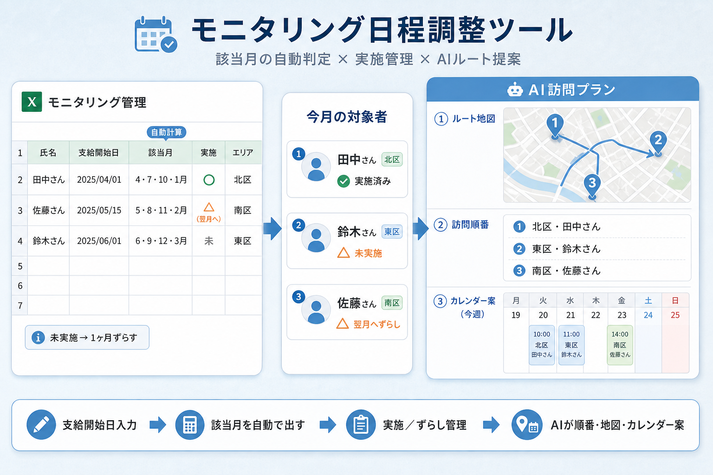

モニタリング日程調整ツール
繰り返し作業を減らして、
本来やりたい支援の時間を取り戻すツールを、これから作りたい。
ひとことで言うと ── 該当月を自動で出し、AIで訪問順を組む
支給開始日を起点に該当月を判定し、実施・ずらし管理までつなげる

ここから、構想を順に見ていきます。
私の仕事：相談支援
障がいのある登録者の方が、障害福祉サービスを利用して希望する生活を送れるよう、ご本人や関係者と一緒に計画を作り、定期的に様子を確認し、必要な連絡調整を行う仕事です。一人事業所なので、これから話す作業も、主に私が担っています。
いまの困りごと
毎月、登録者の方の自宅を訪問する日程調整が発生します。件数はだいたい30件前後です。その前に必ず確認しているのが、「この人は今月、対象だっけ？」です。
モニタリングとは
定期確認のことです。支給開始日から3ヶ月ごとに行います。いまはExcelで、該当月に丸を入れて管理しています。できなかった月は、翌月に丸を付け直す。これも手入力です。
いちばん重い作業
年度始めや利用開始のときに、1年分を手で入れる作業です。
本当はしたいこと
訪問先のエリアが近い人で日程を組みたい。
でも確認しながら組むのは難しくて、実際はエリアがバラバラでも、日程優先で決めています。
このままだと、同じ確認と入力の繰り返しに、支援の時間が奪われ続けます。
作りたいものの核
作りたいものの核は、シンプルです。1年分をまとめて反映すること自体はExcelでもできると思います。ただ、ずらしや実施の管理まで回すのは難しそうだと感じています。入力しやすさや見やすさも、Excelより一歩よくしたいです。
支給開始日を起点に、3ヶ月ごとの該当月を計算する
翌月への付け直しを、手作業ではなく仕組みで回す
「今月対象だっけ？」の迷いを減らす
| 氏名 | 支給開始日 | 該当月 | 実施 | エリア |
|---|---|---|---|---|
| 田中さん | 2025/04/01 | 4・7・10・1月 | 実施済 | 北区 |
| 佐藤さん | 2025/05/15 | 5・8・11・2月 | 翌月へ | 南区 |
| 鈴木さん | 2025/06/01 | 6・9・12・3月 | 未 | 東区 |
AIに任せたいこと
AIに任せたいのが訪問ルートの組み方です。該当月の方の居住エリアを整理して、スケジュール調整の順番リストを一括で作る。Excelのソートでも近いことはできます。でも、「該当月を出す → エリアで並べる」を毎回クリックでやっている、その一手間を減らしたいんです。
訪問先を地図上でつなぎ、回り方を見える化する
エリアが近い人から並べた順番リストを一括作成
訪問日時のたたき台をカレンダーに落とす
これができれば
- ×年度始めの1年分手入力
- ×「今月対象だっけ？」の迷い
- ×エリアバラバラでも日程優先
- ○該当月の自動判定で手入力が減る
- ○実施・ずらしが一目で分かる
- ○その分の時間を直接支援に回せる
仕事はみなさんそれぞれだと思います。でも、「毎年同じ転記をしている」「少しのクリックの積み重ねが重い」という感覚は、どこかで重なるんじゃないかと思っています。
お願い
今日は完成報告ではなく、
これから作る構想の共有です。
「そこはこう作った方がいい」「この作り方が近い」など、作るときのアドバイスをいただけると嬉しいです。